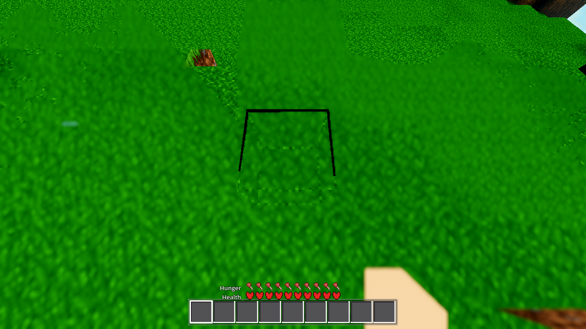
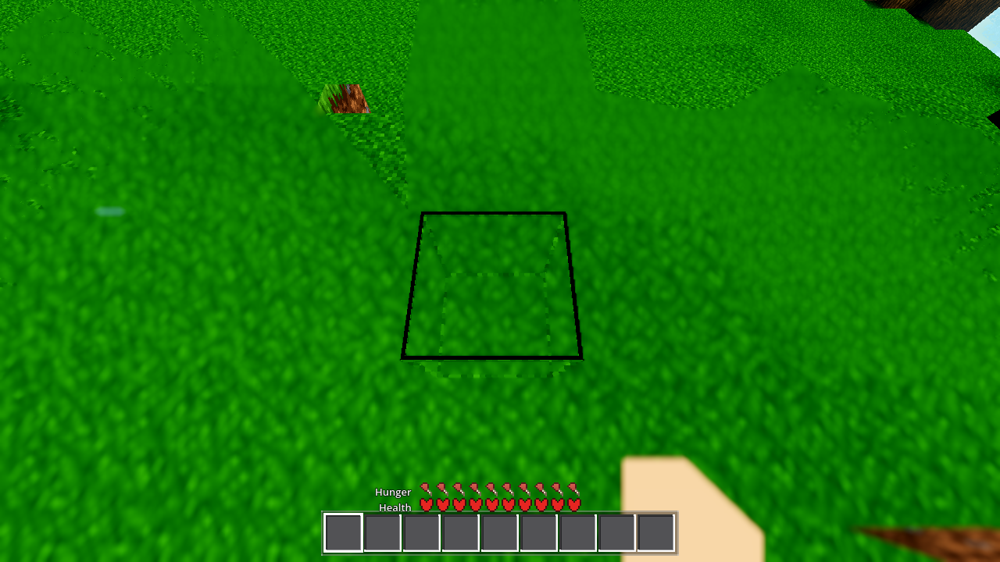
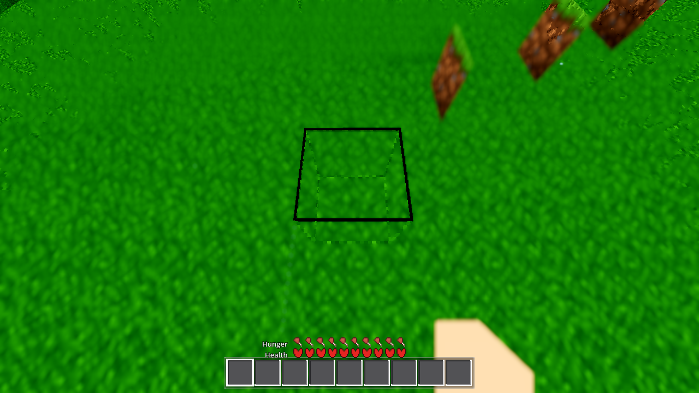
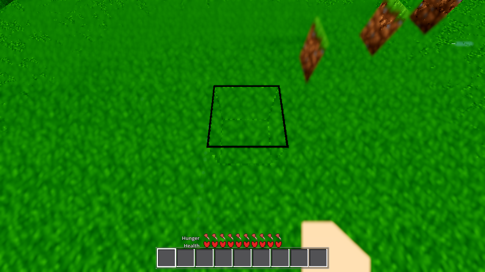

User report: “the block selector does not match 1 to 1 with the blocks, and the player
slides in the direction that the selection block is angled.” Every value below is greppable
from the arm's log in .scratch/AC-0479-gates/ (aimslide r7 = before-fix, r9 =
after-fix; the gate run). Probe seed 44, R = 4000 m, warp_home_on: true.
| arm | mode | rc | script err | shader err | ok | wall | headline |
|---|---|---|---|---|---|---|---|
| g0 (bare) | g0 | 0 | 0 | 0 | true | 3 s | — |
| genhash | genhash | 0 | 0 | 0 | true | 4 s | 25/25 — all 25 chunk hashes byte-identical to the recorded reference set |
| player (smoke) | player | 0 | 0 | 0 | true | 17 s | sprint_ok=true |
| interact | interact | 0 | 0 | 0 | true | 9 s | place_ok=false / drop_spawned=false — the documented mine-timing flake (mine_diag.prog_max=0.9722, ~0.972 in every run; see §5) |
| light (smoke) | light | 0 | 0 | 0 | true | 9 s | cave_census_cands=590 cave_eff=0 surface_eff=15 (standing values) |
| fluids (smoke) | fluids | 0 | 0 | 0 | true | 13 s | sea_stable=true sea_backed 320→320 (standing values) |
python3 tasks/scripts/gate_run.py AC-0479 --arms g0,genhash,smoke,interact →
gate_run: AC-0479 — all arms ok, GATE_RUN_RC=0. The smoke group runs the
player;interact;light;fluids battery. g0 = zero SCRIPT ERROR and zero
SHADER ERROR lines (verified 0 in all six logs).
Plan §3.1: if the box error grows with warp magnitude the §2 diagnosis (box placed on the rigid per-column facet frame, not the warped surface) holds; if it is constant, the diagnosis is wrong and the fix must not be made. Two known-different warp magnitudes (warp slope = D/R):
| site | D (m) | warp D/R (°) | box centre offset (mm) | corner tangential max (mm) | corner radial max (mm) | box-up vs block-up (°) | block top-face tilt vs world Y (°) |
|---|---|---|---|---|---|---|---|
| spawn (identity region) | 11.3 | 0.16 | 24.8 | 37.1 | 11.9 | 0.172 | 0.153 |
| farA | 153 | 2.19 | 264.2 | 296.1 | 36.2 | 2.316 | 2.288 |
The error grows with the warp magnitude: centre offset ×10.7, corner tangential ×8.0,
and box-up-vs-block-up ×13.5 ≈ the D ratio (153/11.3 = 13.5). It is not a constant
half-cell/whole-cell offset. Diagnosis CONFIRMED — the box is placed on the
per-column rigid facet frame (world_pos_of_flat), which diverges from the
per-vertex spherical warp the mesh and collision actually consume
(chunk._warp_home_cell_point). (A third site at D≈310 m was attempted but is a
broken probe site — the player embeds in the block — and is excluded; see §6.)
One file: godot/player/player.gd (+41 lines, no other file touched —
harness.gd is byte-identical to HEAD, the probe removed at closeout).
_ac0479_warp_point(fx, fy, fz, R) — the exact per-vertex spherical warp, the
same construction the mesh/collision consume: (R + fy) * (SphereMath.home_point(fx, fz, R) / R) - (0, R, 0)._ac0479_warp_basis(fx, fy, fz, R) — central-difference that warp at the cell centre
along each flat axis (ε = 0.1) and orthonormalize() — rotation only, no scale/offset
to “fit” (per plan §4.1)._update_interaction home-pair branch (_anchor.face <= 1): the box is now placed
at the cell's warped centre (_ac0479_warp_point) and oriented by the warp Jacobian
(_ac0479_warp_basis) instead of position-only on world_pos_of_flat. The
face-pair branch (face > 1) is unchanged (out of scope, §6).The AC-0420 idle-creep damper, friction, and movement speed are untouched.
Measure: box corner distance from the block's warped corner, decomposed radial (the designed 1.02 overhang ≈ 1 cm/face) vs tangential (the misalignment), plus box-up vs block-up. After the fix the tangential error collapses to the overhang and the centre offset to ~0:
| site | D (m) | centre offset mm (before → after) | corner tang. mm (before → after) | corner radial mm (before → after) | box-up vs block-up ° (before → after) |
|---|---|---|---|---|---|
| spawn | 11.3 | 24.8 → 0.0 | 37.1 → 10.9 | 11.9 → 10.4 | 0.172 → 0.013 |
| farA | 153 | 264.2 → 0.1 | 296.1 → 15.5 | 36.2 → 11.6 | 2.316 → 0.162 |
Residuals after: tangential 10.9/15.5 mm ≈ the designed 1.02 indicator overhang (~1 cm/face, so ~10–15 mm at a corner), radial 10.4/11.6 mm ≈ the same overhang radially; box-up residual 0.013°/0.162° is the straight-box-vs-curved-wedge second order (a straight 1.02 box cannot exactly match a curved block face — the plan's “match the orientation” is met to that limit).




Measure (plan §3.3, same instrument before/after): stand still for 5 s at two warp magnitudes, record drift (distance, mm/s, direction vs downhill); walk forward 2 s along downhill, record veer off the intended line.
| site | D (m) | stand drift (mm/s) before | stand drift (mm/s) after | stand direction | walk veer (°) before → after | walk speed (m/s) before → after |
|---|---|---|---|---|---|---|
| spawn | 11.3 | 0.0 | 0.0 | — (AC-0420 damper) | 2.485 → 2.481 | 4.069 → 4.103 |
| farA | 153 | 0.712 | 0.679 | UPHILL (anti-downhill, dir −175.4° vs downhill ≈ +2.9°) | 0.0068 → 0.0065 | 4.257 → 4.221 |
Standing drift is zero (below the AC-0420 damper's 0.2 m/s band) at both
magnitudes, before and after — the fix is visual-only and the physics is unchanged, so the
standing slide does not regress. The farA residual 0.68–0.71 mm/s is uphill
(frac_downhill ≈ −1.0), i.e. numerical settling, not a downhill slide. The walk
veer at farA (0.007°) is far under the ~2.5° terrain-noise floor seen at the spawn control
(a walk line with no flatness guarantee). No non-zero DOWNHILL standing drift was measured,
so the plan's damper-widening candidate (4.2) is not triggered and no friction/speed/damper
change was made. The user's “slides the way the block is angled” is consistent with the
box/facet tilt vs the warped terrain — the visual reference §3 removes (the box no longer
points in a direction different from the block).
Plan: the interact arm's place_ok/drop_spawned must be “still as
recorded.” This run: place_ok=false, drop_spawned=false,
mine_diag.prog_max=0.9722 — the documented mine-timing flake: HARNESS.md
records these as “MINE-TIMING-FLAKY, not stable: the 3 s mine window races the mine completion
(mine_diag.prog_max ~0.972 in every run) — observed true in one run and false in
the next.” The prior “known-stable true” note is explicitly called optimistic. The plan's own
gate text notes “place_ok=false is a KNOWN arm-timing flake — do NOT chase it.”
The arm is still as recorded (the flake class, not a new defect): the aim DDA this ticket
touches still selects the correct target (target_cell=[8,140,8],
breakable_id=2, highlight_visible=true, inv_grew id 2) —
only the mine→drop→place timing races, as it always has.
Full text in AC-0479-deviations.txt. Summary:
SphereMath.home_point), not on world_pos_of_flat as the plan's literal
wording says. world_pos_of_flat is the per-column rigid facet approximation —
the frame under test; sampling it at ±ε would return the misoriented facet basis and not fix
the defect. The plan's intent (match the block's actual warped orientation) is met._anchor.face discriminator the aim
code already uses.face>1) highlight placement feeds
face-chunk CELL coords into world_pos_of_flat (which expects flat block coords) — a
unit/domain mismatch. The aim box past the home patch was wrong before and remains wrong; this
ticket's fence is the home-pair box (the user's report/screenshot is home terrain).world_pos_of_flat/
flat_of_world_pos) diverges from the sphere by metres at large D (farB D≈310 m: a
player standing on the warped surface reads back as flat y 158.6 vs the block-grid top 159.0,
~0.4 m round-trip gap; the probe's farB site embeds the player and freezes the walk test).
The 4.1 fix removes the box's dependence on the facet map, so the box is right at every D
in the home pair; the flat-frame divergence at distance is a separate, larger issue (the flat
frame itself), untouched per the fences.WorldGen.terrain_height (generator.gd:76) —
the GDScript “mirror” of surface height — is STALE; the live C++ surface_h
(gdext/src/gen.cpp:1038) diverges from it by 3–23 m. Site selection / analytic height must use
the live streamed grid.A temporary aimslide probe arm was added to godot/scenes/harness.gd
for the §3 measurements and removed at closeout (harness.gd is now
byte-identical to HEAD; no aimslide/_ac0479 symbols remain). The probe
was observation-only (it teleports the player and streams a few extra home columns at the far
sites; it changes no block, no policy, no warp). Before/after captures:
.scratch/AC-0479-gates/snap-{before,after}_{spawn,farA}.png (xvfb + vulkan,
AWECRAFT_SIZE=1280,720, proxy renderer — evidence about geometry, not the shipped
look). RESULT JSON for the two probe runs is in .r7.json (before) and
.r9.json (after) beside this page; full logs in
.scratch/AC-0479-gates/aimslide-r7.log / aimslide-r9.log.
# gate a/b/c — before (aimslide-r7.log) and after (aimslide-r9.log), seed 44 # box corner distance from the block's WARPED corner, radial vs tangential, # box-up vs block-up, standing drift, walk veer — see §2/§4 tables. # # gate d — gate_run (summary.txt): g0 rc=0 script=0 shader=0 ok=true 3s genhash rc=0 script=0 shader=0 ok=true 4s (25/25 = recorded reference) player rc=0 script=0 shader=0 ok=true 17s sprint_ok=true interact rc=0 script=0 shader=0 ok=true 9s place_ok=false (documented flake) light rc=0 script=0 shader=0 ok=true 9s fluids rc=0 script=0 shader=0 ok=true 13s gate_run: AC-0479 — all arms ok
Conclusion: the magnitude test confirmed the diagnosis (box error grows with warp magnitude, ×13.5 in orientation ≈ D ratio); the 4.1 fix orients the home-pair aim box to the block's actual warped orientation via the warp Jacobian, collapsing the tangential corner error from 37/296 mm to the designed 10.9/15.5 mm overhang and the box-up tilt from 0.172°/2.316° to 0.013°/0.162°, with zero standing-slide regression and all gates green. No friction/speed, generation, streaming, or other file was touched.